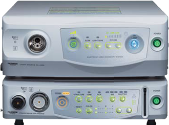

Sistemas de videoendoscopia
FUJIFILM es una empresa comprometida con la innovación y el desarrollo de tecnología para mejorar la calidad de vida de las personas a nivel mundial. Esta misión toma especial relevancia dentro de la división de Cuidado de la Salud en donde FUJIFILM desarrolla tecnología de punta para crear productos de la más alta calidad y funcionalidad para el sector salud.
Es por ello que ofrece un portafolio completo de productos de la línea de endoscopia formado por equipos de fibroscopia y videoendoscopia, que cuenta con tecnologías innovadoras como cromoendoscopia, enteroscopia de doble balón y ultrasonido endoscópico, así como monitores de alta definición. Equipos y materiales para prevención de enfermedades nosocomiales como desinfección de alto nivel y equipos de apoyo tales como bombas de CO2 e irrigación, además de dispositivos de endoscopia desechables y reusables.
EPX-4450HD

DESCRIPCIÓN:
La vanguardia en los sistemas de videoendoscopia FUJIFILM. Compatible con series 500, 600, Lasereo y ultrasonido SU-1.
EPX-2500

DESCRIPCIÓN:
Excelente equipo con alta simplicidad. Ideal para el día a día.
EG-L590ZW
Compatible con tecnología exclusiva de láser azul.
Serie 500
DESCRIPCIÓN:
Equipos que encuentran su aplicación en trabajos rutinarios hasta equipos especializados para realizar enteroscopia de doble balón, cromoendoscopia de láser azul y ultrasonido. Dentro de esta serie destacan:
• EG-L590ZW (tecnología exclusiva Lasereo).
• EN-580T.
• EG-580UT.
Registro Sanitario: 0270E2014 SSA
Serie 600
DESCRIPCIÓN:
El primer equipo de videoendoscopia de FUJIFILM que utiliza tecnología CMOS, integrando tecnología HD y zoom a 135X.
Registro Sanitario: 2442E2014 SSA
• EG-600ZW.
|
Campo de visión |
Normal: 140°/Cercano: 56° |
|
Rango de observación |
1.5~100 mm |
|
Normal: 3~100 mm |
|
|
Cercano:1.5~2.5 mm |
|
|
Angulaciones |
Arriba 210°/Abajo 90° |
|
Derecha 100°/Izquierda 100° |
|
|
Magnificación |
135* veces |
|
Diámetro distal |
9.9 mm |
|
Diámetro de inserción |
9.8 mm |
|
Diámetro de canal de trabajo |
2.8 mm |
|
Longitud de trabajo |
1,100 mm |
|
Longitud total |
1,400 mm |
|
Water jet |
Sí |
• EC-600ZW/L
|
Campo de visión |
Normal: 140°/Cercano: 56° |
|
Rango de observación |
1.5~100 mm |
|
Normal: 3~100 mm |
|
|
Cercano:1.5~2.5 mm |
|
|
Angulaciones |
Arriba 180°/Abajo 180° |
|
Derecha 160°/Izquierda 160° |
|
|
Magnificación |
135* veces |
|
Diámetro distal |
12 mm |
|
Diámetro de inserción |
12 mm |
|
Diámetro de canal de trabajo |
3.8 mm |
|
Longitud de trabajo |
1,630 mm |
|
Longitud total |
1,330 mm |
|
Water jet |
Sí |
|
Campo de visión |
Normal: 140°/Cercano: 55° |
|
Rango de observación |
2~100 mm |
|
Normal: 6~100 mm |
|
|
Cercano: 2~3 mm |
|
|
Angulaciones |
Arriba 210°/Abajo 90° |
|
Derecha 100°/Izquierda 100° |
|
|
Magnificación |
135* veces |
|
Diámetro distal |
10.8 mm |
|
Diámetro de inserción |
9.8 mm |
|
Canal de trabajo |
2.8 mm |
|
Longitud de trabajo |
1,100 mm |
|
Longitud total |
1,400 mm |
Fuente de luz LASEREO
Nueva fuente de luz láser que evoluciona el mundo endoscópico
BLI (Imágenes de láser azul): Incrementa el contraste de micro vasos y estructuras superficiales de la mucosa.
El sistema también cuenta con luz blanca para ver la imagen endoscópica al natural.
Registro Sanitario:
EG-L590ZW 0088E2015 SSA, EC-L590ZW 0090E2015 SSA
DESCRIPCIÓN:
Lo último en cromoendoscopia mediante la tecnología de láser azul, proporciona iluminación en longitudes de onda de banda estrecha para la iluminación de la mucosa y la detección temprana del cáncer. Lasereo se encuentra equipado con fuentes de luz láser que emiten distintas longitudes de onda: luz blanca y BLI que permiten diferentes modos de observación.
SU-1
Registro Sanitario: 1392E2012 SSA
Procesador de ultrasonido endoscópico.
Procesador equipado con tecnología de procesamiento de imagen que ayuda al soporte de diagnósticos con una variedad de modos de imagen.
CARACTERÍSTICAS:
• Modo B de alta resolución.
• Imagen armónica de contraste.
• Elastografía.
• Doppler color.
• Imagen por armónica tisular.
• Imagen por armónica compuesta.
• Corrección de la velocidad del sonido.
• Canal de trabajo de 3.8 mm.
• Diámetro de la punta distal de 13.9 mm.
EG-580UT

CARACTERÍSTICAS:
• Angulación superior de 150° junto con una sección rígida más corta.
• Dirección de visión 40° (oblicuo).
• Rango de observación 3–100 mm.
• Campo de visión 140°.
• Diámetro distal 13.9 mm.
• Diámetro de inserción 12.4 mm.
• Angulaciones: Arriba 150°/Abajo 150°.
• Derecha 120°/Izquierda 120°.
• Modos de escaneo (UR/UT): Color Doppler, Power Doppler, Pulse Doppler, B mode, M mode.
• Métodos de escaneo (UT): Electrónico lineal oblicuo.
• Ángulos de escaneo (UT): 150° (en combinación con SU-1).
• Frecuencia (UR/UT): 5 MHz/7.5 MHz/10 MHz/12 MHz.
• Longitud de trabajo 1,250 mm.
• Longitud total 1,550 mm.
Enteroscopia de doble balón EN-580T
CARACTERÍSTICAS:
• Canal de trabajo de 3.2 mm.
• Nuevo súper CCD.
• Sistema óptico de alto rendimiento (2 mm).
• Diseño del puerto de entrada de aire del balón distal.
• Sistema de irrigación (nozzle) de alto flujo.
BENEFICIOS:
• Estándard de oro para tratamiento del intestino delgado.
• Gran potencial terapéutico.
• Escleroterapia.
• Coagulación con calor (Argón plasma).
• Polipectomía.
• Dilatación de estenosis.
Se puede además utilizar para todos los procedimientos de CPRE en pacientes operados.
Esfinterotomía, extracción de litos, dilatación de estenosis, colocación de prótesis.
Registro Sanitario: 1344E2012 SSA
DATOS COMPLEMENTARIOS: En FUJIFILM de México queremos convertirnos en su mejor aliado, es por eso que estamos comprometidos con nuestros clientes y ofrecemos el mejor servicio posventa.
FUJIFILM DE MÉXICO, S.A. de C.V.
Teléfono: (55) 5263-5500
e-mail: endoscopia@fujifilm.com.mx
www.fujifilm.com.mx